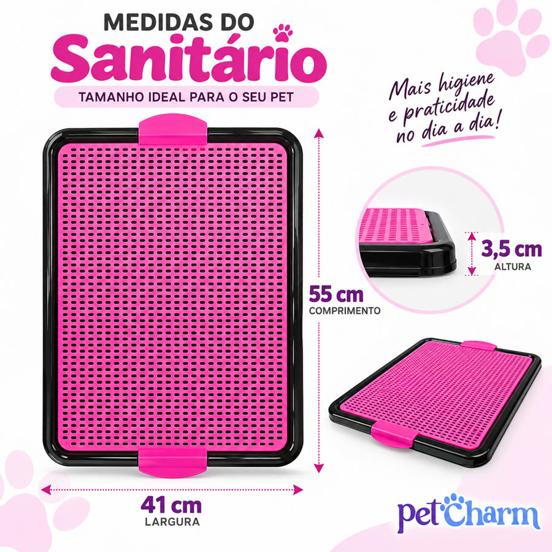
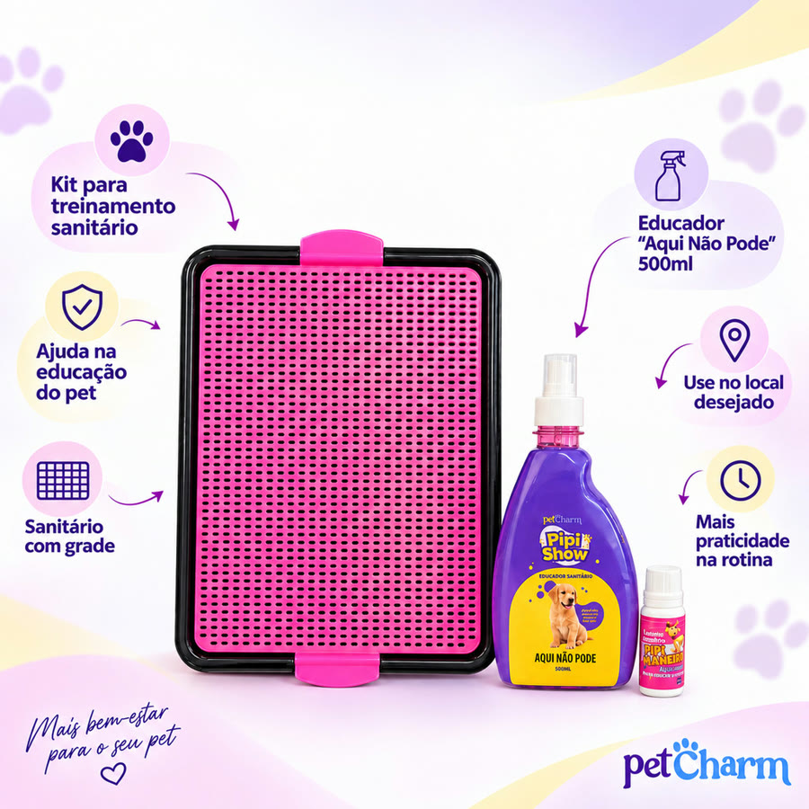
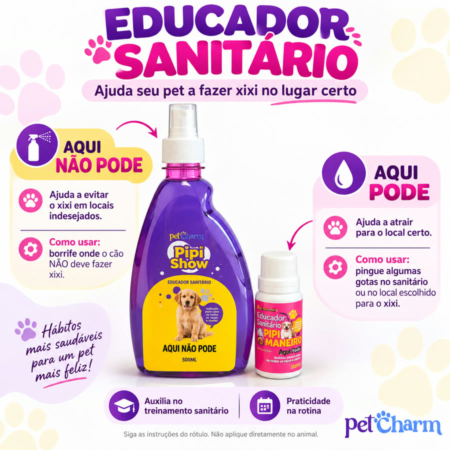

Achado nº 29
Sanitário canino lavável com grade (com ou sem educador)




O que diz a página oficial do produto
- Sanitário para cachorro de plástico: uma bandeja com uma grade removível por cima, presa por travas laterais
- Segundo o anúncio, a grade isola o xixi na bandeja e as patas do cachorro ficam secas
- É lavável
- Mede 55 cm por 41 cm e 3,5 cm de altura; segundo o anúncio, é para cães pequenos e médios
- Vendido com ou sem educador: o kit traz um educador em gotas, para pingar no sanitário, e um spray de 500 ml para borrifar onde o cachorro não deve fazer xixi
- O anúncio sugere, nos primeiros dias, colocar jornal entre a grade e a bandeja se o cachorro já usa jornal
- Cores: azul, rosa, vermelho, preto e verde
- Na Shopee, tem nota 4,8 com mais de 12 mil avaliações e mais de 20 mil vendidos
Link de afiliado: se você comprar por ele, a Achadaria pode receber uma comissão, sem custo extra para você. Preço, estoque e entrega são da loja e podem mudar; confira lá antes de comprar.